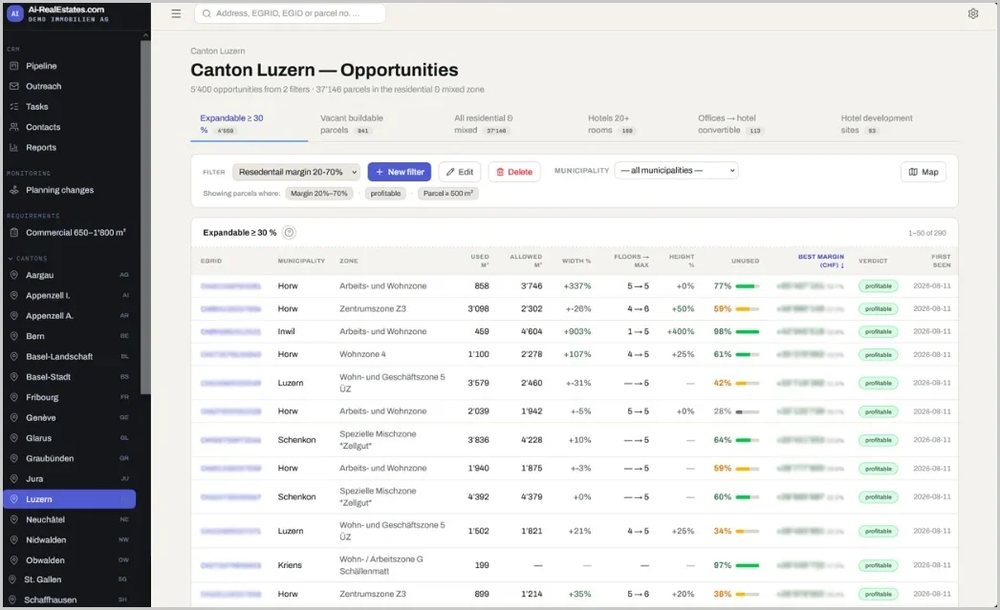
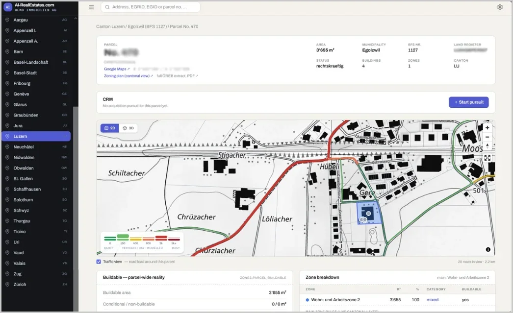
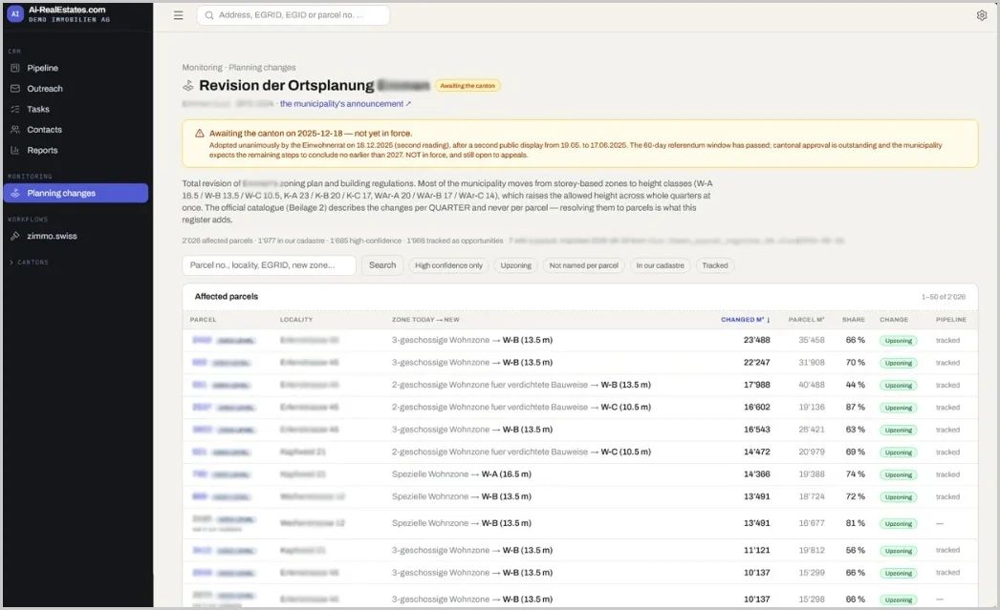
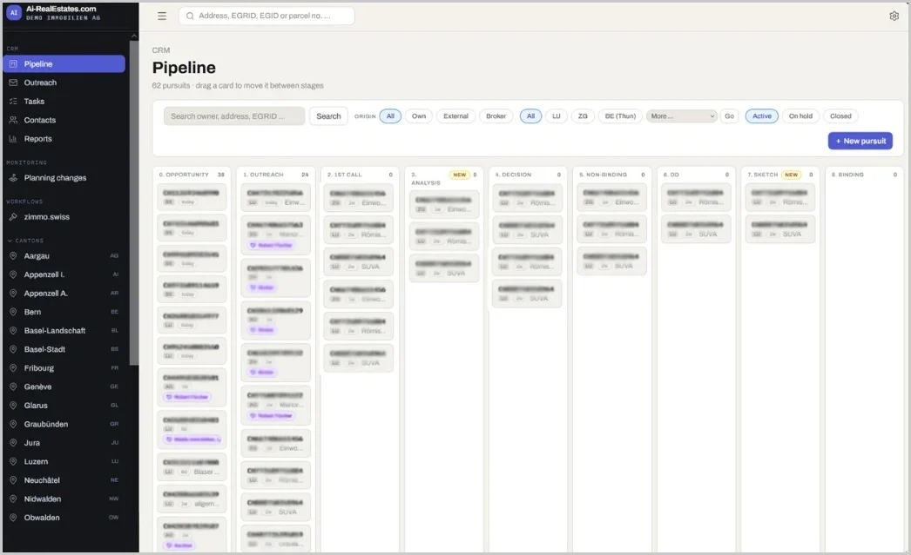

For Simon Kondratowicz and the LUCEED team · Tech roadmap and AI transformation at RealstoneFür Simon Kondratowicz und das LUCEED Team · Tech-Roadmap und KI-Transformation bei Realstone
The buildable floor area nobody has claimed yet. Our AI agents sweep the Swiss register every night: what may be built, what it returns, and who owns it. Thank you for your time in our demo; here is everything in one place.Die Baufläche, die noch niemand beansprucht hat. Unsere KI-Agenten durchsuchen jede Nacht das Schweizer Register: was gebaut werden darf, was es abwirft und wem es gehört. Danke für Ihre Zeit in unserer Demo; hier ist alles an einem Ort.
The platform in about 3 minutesDie Plattform in rund 3 Minuten
The problemDas Problem
The gap between when information becomes available and when you can act on it is where deals are lost.In der Lücke zwischen verfügbarer Information und Ihrer Handlungsfähigkeit gehen Deals verloren.
The manual pathDer manuelle Weg
With the platformMit der Plattform
1 morning1 MorgenThe screening ran overnight. The zoning is already computed and cited. The profitability is calculated on your costs. The owner is resolved and the approach letter is drafted for your signature.Das Screening lief über Nacht. Die Zonierung ist berechnet und belegt. Die Rentabilität ist auf Ihren Kosten gerechnet. Der Eigentümer ist ermittelt und der Brief zur Unterschrift entworfen.
Six to nine weeks of elapsed time, removed from every sourcing cycle.Sechs bis neun Wochen Durchlaufzeit, aus jedem Sourcing-Zyklus entfernt.
How it worksSo funktioniert es
Not a listings portal. Agentic workflows that compute what is legally buildable, and whether building it pays, without anybody on your side starting them.Kein Inserateportal. Agentische Workflows, die berechnen, was rechtlich baubar ist und ob es sich lohnt, ohne dass jemand bei Ihnen sie starten muss.
Zoning changes, permits and planning notices, tracked municipality by municipality. A rule change is picked up the night it appears.Zonenänderungen, Baugesuche und Planungsauflagen, Gemeinde für Gemeinde verfolgt. Eine Regeländerung wird in der Nacht erkannt, in der sie erscheint.
German, French and Italian legal texts turned into numbers: 34,591 numeric rules, each with its article reference.Deutsche, französische und italienische Rechtstexte werden zu Zahlen: 34’591 numerische Regeln, jede mit Artikelverweis.
One profitability calculation per building, on your cost figures, your definition of return and your hurdle rates.Eine Rentabilitätsrechnung pro Gebäude, mit Ihren Kosten, Ihrer Renditedefinition und Ihren Hurdle Rates.
The current owner resolved, and a compliant letter ready for your signature.Der aktuelle Eigentümer ermittelt und ein konformer Brief bereit zur Unterschrift.
Inside the nightly runIm nächtlichen Lauf
Nobody at your organisation, and nobody at ours, started any of this. Timings illustrate one cycle.Niemand bei Ihnen und niemand bei uns hat das gestartet. Die Zeiten illustrieren einen Zyklus.
An amended zoning ordinance is published and detected.Eine geänderte Zonenordnung wird publiziert und erkannt.
Heights, storeys and setbacks extracted with their articles.Höhen, Geschosse und Abstände mit ihren Artikeln extrahiert.
Every parcel under that ordinance recalculated.Jede Parzelle unter dieser Ordnung neu berechnet.
Each affected building run through your cost model.Jedes betroffene Gebäude durch Ihr Kostenmodell gerechnet.
Filtered against your criteria, ranked by your return.Nach Ihren Kriterien gefiltert, nach Ihrer Rendite gereiht.
Owners resolved for what clears your gate. Letter drafted.Eigentümer ermittelt für alles, was Ihr Gate passiert. Brief entworfen.
You open a shortlist, not a database.Sie öffnen eine Shortlist, keine Datenbank.
The productDas Produkt
The shortlistDie Shortlist
What stands today against what the ordinance permits. The gap is the opportunity.
Was heute steht, gegenüber dem, was die Ordnung erlaubt. Die Differenz ist die Opportunität.
On your cost figures, for the best of the priced scenarios.
Auf Ihren Kosten, für das beste der gerechneten Szenarien.
Profitable, break-even or loss. Stop reading where it stops paying.
Profitabel, Break-even oder Verlust. Lesen Sie nur, solange es sich lohnt.
Save a filter and it re-runs itself every night.
Filter speichern, und er läuft jede Nacht neu.
Canton Lucerne: 37,146 parcels in residential and mixed zones, reduced to a ranked list with a margin on every line.Kanton Luzern: 37’146 Parzellen in Wohn- und Mischzonen, reduziert auf eine gereihte Liste mit Marge auf jeder Zeile.

From map to parcelVon der Karte zur Parzelle
Legal record, ÖREB extract, buildable area per zone and traffic context.
Rechtslage, ÖREB-Auszug, Baufläche pro Zone und Verkehrskontext.
Macro and micro analysis and scoring of the location and the plot.
Makro- und Mikroanalyse sowie Scoring von Standort und Parzelle.
Drop in what you know, and the plot is re-evaluated on it.
Fügen Sie Ihr Wissen hinzu, und die Parzelle wird neu bewertet.
A plot knowledge base you can chat with, through our plot AI agent.
Eine Parzellen-Wissensbasis, mit der Sie über unseren Parzellen-KI-Agenten chatten.
Everything your analyst spends a week assembling. "Start pursuit" turns the parcel into a tracked acquisition.Alles, was Ihr Analyst eine Woche lang zusammenträgt. «Start pursuit» macht die Parzelle zur verfolgten Akquisition.

Rule changesRegeländerungen
The official annex describes a revision by quarter; we resolve it to the parcel, and state our confidence.
Der offizielle Anhang beschreibt eine Revision nach Quartier; wir lösen sie bis zur Parzelle auf und nennen unsere Konfidenz.
Adopted, cantonal approval outstanding, open to appeal. Shown that way, never sold as certainty.
Beschlossen, kantonale Genehmigung ausstehend, anfechtbar. So dargestellt, nie als Gewissheit verkauft.
Every new opportunity a rule change creates is scored the night it appears.
Jede neue Opportunität aus einer Regeländerung wird in der Nacht bewertet, in der sie entsteht.
Capacity that does not exist today, on parcels you can reach before it does.Kapazität, die es heute noch nicht gibt, auf Parzellen, die Sie vorher erreichen.

From shortlist to conversationVon der Shortlist zum Gespräch
Including where the holding sits inside a company or structure.
Auch wenn das Eigentum in einer Gesellschaft oder Struktur liegt.
Consent basis, suppression and opt-out lists agreed with you first.
Einwilligungsbasis, Sperr- und Opt-out-Listen vorab mit Ihnen vereinbart.
Letter, email or LinkedIn message, in your voice. Nothing leaves without your sign-off.
Brief, E-Mail oder LinkedIn-Nachricht in Ihrem Ton. Nichts geht ohne Ihre Freigabe raus.
Nine-stage acquisition board, or two-way API sync with Salesforce, HubSpot or your own system.
Neunstufiges Akquisitions-Board oder Zwei-Wege-API-Sync mit Salesforce, HubSpot oder Ihrem System.
Every approach, response and outcome accumulates in your instance, and belongs to you.Jede Ansprache, Antwort und jedes Ergebnis sammelt sich in Ihrer Instanz und gehört Ihnen.

New this month · November 2026Neu diesen Monat · November 2026
Ask plain-language questions about your own data; it updates pipeline, tasks and contacts.
Fragen in normaler Sprache zu Ihren Daten; er aktualisiert Pipeline, Aufgaben und Kontakte.
Every affected plot listed and scored for acquisition fit, with revision timeline and planning documents.
Jede betroffene Parzelle gelistet und nach Akquisitions-Fit bewertet, mit Revisions-Zeitachse und Planungsunterlagen.
ZH, AG, BS, BL, TG, ZG, FR, NE, VS, SH, LU and SO, with company owners from the commercial register.
ZH, AG, BS, BL, TG, ZG, FR, NE, VS, SH, LU und SO, Firmen-Eigentümer aus dem Handelsregister.
Drafted and printed in one go; pause a canton; "no letters" respected on every plot.
In einem Schritt erstellt und gedruckt; Kanton pausierbar; «keine Briefe» auf jeder Parzelle respektiert.
Claude, ChatGPT, Grok or Kimi with your login; changes appear on the timeline under your name.
Claude, ChatGPT, Grok oder Kimi mit Ihrem Login; Änderungen erscheinen unter Ihrem Namen.
The architectureDie Architektur
The central agentic systemDas zentrale agentische System
Your own instanceIhre eigene Instanz
National scale without a national team. Two partners hunting the same canton never see the same shortlist.Nationale Reichweite ohne nationales Team. Zwei Partner im selben Kanton sehen nie dieselbe Shortlist.
Strategy playbooksStrategie-Playbooks
Each playbook is configurable logic in your own instance: what to source, how to score it, what to calculate, what to show, and who approves. Pick a strategy to see what the platform does at each step.Jedes Playbook ist konfigurierbare Logik in Ihrer eigenen Instanz: was gesourct wird, wie es bewertet wird, was gerechnet wird, was angezeigt wird und wer freigibt. Wählen Sie eine Strategie, um zu sehen, was die Plattform in jedem Schritt tut.
Nightly screening for the gap between what stands and what the ordinance allows.
Nächtliches Screening auf die Lücke zwischen Bestand und dem, was die Ordnung erlaubt.
Buildable capacity from cited rules, maximum sellable floor area, location score.
Baukapazität aus belegten Regeln, maximal verkaufbare Fläche, Standort-Score.
Development calculation on your cost model, scenario by scenario.
Entwicklungsrechnung auf Ihrem Kostenmodell, Szenario für Szenario.
Ranked by margin against your hurdle; committee pack drafted from cited data.
Nach Marge gegen Ihre Hurdle gereiht; Komitee-Unterlage aus belegten Daten entworfen.
Owner resolved, letter drafted for sign-off, pursuit tracked.
Eigentümer ermittelt, Brief zur Freigabe entworfen, Akquisition verfolgt.
Standing brief for existing buildings that match your location and asset criteria.
Stehender Auftrag für Bestandsliegenschaften nach Ihren Standort- und Objektkriterien.
Building register, zoning and location scoring on one page.
Gebäuderegister, Zonierung und Standort-Scoring auf einer Seite.
Income and cost assumptions from your inputs, financing as you define it.
Ertrags- und Kostenannahmen aus Ihren Inputs, Finanzierung nach Ihrer Definition.
Yield against your regional hurdle; approval gate before any approach.
Rendite gegen Ihre regionale Hurdle; Freigabe-Gate vor jeder Ansprache.
Asset management on the same base: lease abstraction, rent rolls, renewals.
Asset Management auf derselben Basis: Mietvertragsauszüge, Mieterspiegel, Verlängerungen.
Underused parcels where the gap between used and allowed is large.
Unternutzte Parzellen mit grosser Lücke zwischen genutzt und erlaubt.
Scenarios side by side: renovate, extend or replace.
Szenarien nebeneinander: sanieren, erweitern oder ersetzen.
Investment per scenario on your costs; value after works and yield after stabilisation.
Investition pro Szenario auf Ihren Kosten; Wert nach Umsetzung und Rendite nach Stabilisierung.
Tender comparison, permit tracking, cost and site reporting.
Offertvergleich, Baubewilligungs-Tracking, Kosten- und Baustellenreporting.
Into the portfolio view, with yield tracked against plan.
In die Portfolio-Sicht, mit Rendite gegen Plan verfolgt.
Zoning radar flags revisions the night they are published.
Das Zonen-Radar meldet Revisionen in der Nacht ihrer Publikation.
Revision resolved to the parcel, with a confidence level per match.
Revision bis zur Parzelle aufgelöst, mit Konfidenz pro Treffer.
Additional capacity and its value on your cost model.
Zusätzliche Kapazität und ihr Wert auf Ihrem Kostenmodell.
Timing by status: adopted, cantonal approval outstanding, open to appeal.
Timing nach Status: beschlossen, kantonale Genehmigung ausstehend, anfechtbar.
Reach the owner before the new capacity exists.
Den Eigentümer erreichen, bevor die neue Kapazität existiert.
Your criteria as a standing filter against the whole territory, re-run every night.
Ihre Kriterien als stehender Filter über das ganze Gebiet, jede Nacht neu.
Location, plot and opportunity scoring weighted to your strategy.
Standort-, Parzellen- und Opportunitäts-Scoring nach Ihrer Strategie gewichtet.
Your cost model per municipality, your definition of return, your hurdle rates.
Ihr Kostenmodell pro Gemeinde, Ihre Renditedefinition, Ihre Hurdle Rates.
One view per strategy, per team and per committee.
Eine Sicht pro Strategie, pro Team und pro Komitee.
Your gates. Nothing outbound without a person deciding.
Ihre Gates. Nichts geht raus, ohne dass ein Mensch entscheidet.
Strategies, steps and KPIs are configured with your team during the workflow build; the calculations run on your own cost figures and definitions of return.Strategien, Schritte und KPIs werden mit Ihrem Team im Workflow-Aufbau konfiguriert; gerechnet wird auf Ihren eigenen Kosten und Renditedefinitionen.
What changesWas sich ändert
We give your team super-powers. Nothing here requires you to hire. It requires you to stop spending the week on the part a machine can do.Wir geben Ihrem Team Superkräfte. Nichts davon erfordert neue Stellen. Es erfordert nur, die Woche nicht mehr mit dem Teil zu verbringen, den eine Maschine erledigt.
| In your weekIn Ihrer Woche | TodayHeute | On the platformAuf der Plattform |
|---|---|---|
| Finding candidatesKandidaten finden | Brokers send what they choose to sendMakler schicken, was sie schicken wollen | The whole territory screened nightly against your criteriaDas ganze Gebiet nächtlich nach Ihren Kriterien gescreent |
| Checking the zoningZonierung prüfen | Three to five days per site, in three languagesDrei bis fünf Tage pro Objekt, in drei Sprachen | Already computed, with the article on every figureBereits berechnet, mit Artikel bei jeder Zahl |
| Deciding if it paysEntscheiden, ob es sich lohnt | A commissioned study, two to four weeksEine beauftragte Studie, zwei bis vier Wochen | One calculation per building, on your costsEine Rechnung pro Gebäude, auf Ihren Kosten |
| Screening broker offersMakler-Angebote prüfen | One person-day each, about eighty a yearJe ein Personentag, rund achtzig pro Jahr | Minutes each; mispriced offers become visibleMinuten pro Angebot; falsch bepreiste Angebote werden sichtbar |
| Finding the ownerEigentümer finden | One to two weeks of tracingEin bis zwei Wochen Recherche | Resolved, with a compliant approach draftedErmittelt, mit entworfener konformer Ansprache |
| What the analyst doesWas der Analyst macht | Assembles the numbersTrägt Zahlen zusammen | Argues about numbers already assembledDiskutiert über bereits vorliegende Zahlen |
The constraint stops being deal flow and becomes capital, which is a much better problem to have.Der Engpass ist nicht mehr der Dealflow, sondern das Kapital. Ein deutlich besseres Problem.
Beyond property sourcingÜber das Sourcing hinaus
The same engine, agents and evaluation discipline can take on any AI use case and any automation inside your organisation.Dieselbe Engine, dieselben Agenten und dieselbe Evaluationsdisziplin übernehmen jeden KI-Use-Case und jede Automatisierung in Ihrer Organisation.
New criteria, asset classes and markets on the same engine.
Neue Kriterien, Anlageklassen und Märkte auf derselben Engine.
Land-register extracts, leases and permits read and flagged.
Grundbuchauszüge, Mietverträge und Bewilligungen gelesen und markiert.
Investment memos and credit papers drafted from cited data.
Investment-Memos und Kreditunterlagen aus belegten Daten entworfen.
Lease abstraction, rent rolls, renewals, tenant communication.
Mietvertragsauszüge, Mieterspiegel, Verlängerungen, Mieterkommunikation.
Tender comparison, permit tracking, cost and site reporting.
Offertvergleich, Bewilligungs-Tracking, Kosten- und Baustellenreporting.
Exposés, listing texts, buyer matching and CRM follow-ups.
Exposés, Inseratetexte, Käufer-Matching und CRM-Follow-ups.
Invoices, reconciliations, approvals, off the spreadsheets.
Rechnungen, Abstimmungen, Freigaben, weg von Spreadsheets.
A private AI over your documents, policies and deal history.
Eine private KI über Ihre Dokumente, Richtlinien und Deal-Historie.
Agents wired into your ERP, CRM, Microsoft 365 or Google.
Agenten verbunden mit Ihrem ERP, CRM, Microsoft 365 oder Google.
If a task is repetitive, document-heavy or rule-based, we can automate it, and we measure it before it goes live.Ist eine Aufgabe repetitiv, dokumentenlastig oder regelbasiert, können wir sie automatisieren, und wir messen sie, bevor sie live geht.
Why partner with SWISS.AiWarum SWISS.Ai als Partner
Ai-RealEstates is built by SWISS.Ai, an agentic AI infrastructure company based in Zug.Ai-RealEstates wird von SWISS.Ai gebaut, einem Unternehmen für agentische KI-Infrastruktur mit Sitz in Zug.
Not pilots: Ai-RealEstates runs 100+ AI agents every night, across 3.25 million parcels.
Keine Piloten: Ai-RealEstates betreibt jede Nacht 100+ KI-Agenten über 3,25 Mio. Parzellen.
34,591 numeric zoning rules read from German, French and Italian legal texts, each with its article reference. Cadastre, building register and zoning on one parcel identity.
34’591 numerische Zonenregeln aus deutschen, französischen und italienischen Rechtstexten, jede mit Artikelverweis. Kataster, Gebäuderegister und Zonierung auf einer Parzellen-Identität.
Golden datasets, field-level checks and monitoring on every agent. Every output checked against its source before release.
Golden Datasets, Prüfungen auf Feldebene und Monitoring für jeden Agenten. Jedes Ergebnis vor der Freigabe gegen seine Quelle geprüft.
The SWISS.Ai team designs, builds and runs your platform directly.
Das SWISS.Ai Team konzipiert, baut und betreibt Ihre Plattform direkt.
30 years of digital transformation for enterprise brands, 1,000+ brands scaled, now focused entirely on agentic AI.
30 Jahre digitale Transformation für Enterprise-Marken, über 1’000 skalierte Marken, heute ganz auf agentische KI fokussiert.
Swiss built, hosted and run. Your data stays yours, your pipeline is private to you, and nothing goes out without human approval.
In der Schweiz gebaut, gehostet und betrieben. Ihre Daten bleiben Ihre, Ihre Pipeline ist privat, und nichts geht ohne menschliche Freigabe raus.
Why partnerships are cappedWarum Partnerschaften begrenzt sind
We cap it on purpose. A screening advantage every developer has is not an advantage, it is a new baseline. One partnership per organisation, never shared: your instance and cost model are yours alone. 17 are still open today.Wir begrenzen bewusst. Ein Screening-Vorteil, den jeder Entwickler hat, ist kein Vorteil, sondern eine neue Basis. Eine Partnerschaft pro Organisation, nie geteilt: Ihre Instanz und Ihr Kostenmodell gehören nur Ihnen. Heute sind noch 17 offen.
How the partnership growsWie die Partnerschaft wächst
Your instance on your criteria, cost model and territory, after discovery with your team, calibration on addresses you know, and an integrations and security review.
Ihre Instanz mit Ihren Kriterien, Ihrem Kostenmodell und Gebiet, nach Discovery mit Ihrem Team, Kalibrierung auf Adressen, die Sie kennen, und einem Integrations- und Security-Review.
Your process, gates, reports and integrations encoded in the system.
Ihr Prozess, Ihre Gates, Reports und Integrationen im System abgebildet.
New agents and automations across departments, on the same foundation, with a shared roadmap reviewed with you.
Neue Agenten und Automatisierungen über Abteilungen hinweg, auf derselben Basis, mit gemeinsamer Roadmap.
Fully custom and unique to you: your data, judgement and memory in one system.
Vollständig individuell: Ihre Daten, Ihr Urteil und Ihr Gedächtnis in einem System.
Steers the tech roadmap and the transformation: priorities, governance, change.Steuert Tech-Roadmap und Transformation: Prioritäten, Governance, Change.
Delivers the platform, the data and the AI engineering, and keeps shipping every month.Liefert Plattform, Daten und KI-Engineering, mit neuen Funktionen jeden Monat.
A fast path from strategy to tools the acquisition team uses every day.Ein schneller Weg von der Strategie zu Tools, die das Akquisitionsteam täglich nutzt.
HonestyEhrlichkeit
A vendor that claims everything is telling you nothing.Ein Anbieter, der alles behauptet, sagt Ihnen nichts.
Or your architects, or your due diligence. It removes the weeks before judgement is worth applying.
Auch nicht Ihre Architekten oder Ihre Due Diligence. Es entfernt die Wochen, bevor sich Urteilen lohnt.
It removes the need for one where the object was never listed. Elsewhere, you arrive better informed than the seller.
Es macht ihn überflüssig, wo das Objekt nie inseriert war. Anderswo kommen Sie besser informiert als der Verkäufer.
Support is best effort, with named people you can reach.
Support nach bestem Bemühen, mit namentlich erreichbaren Personen.
Registers contain errors. Where a figure is uncertain we show it as uncertain, not rounded into confidence.
Register enthalten Fehler. Wo eine Zahl unsicher ist, zeigen wir sie als unsicher.
Everything else here is measured, cited, or shown to you live on your own address.Alles andere hier ist gemessen, belegt oder wird Ihnen live an Ihrer eigenen Adresse gezeigt.
Next stepNächster Schritt
I would be glad to prepare a tailored walkthrough for management, or a short working session with your team to sketch the first playbook on addresses you know.Gerne bereite ich eine massgeschneiderte Präsentation für das Management vor, oder eine kurze Arbeitssession mit Ihrem Team, um das erste Playbook an Adressen zu skizzieren, die Sie kennen.